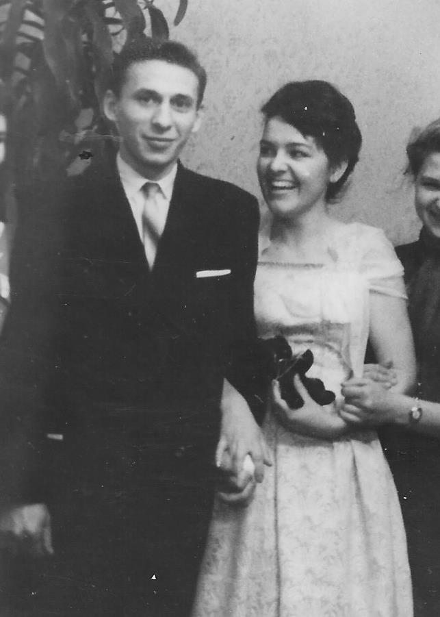
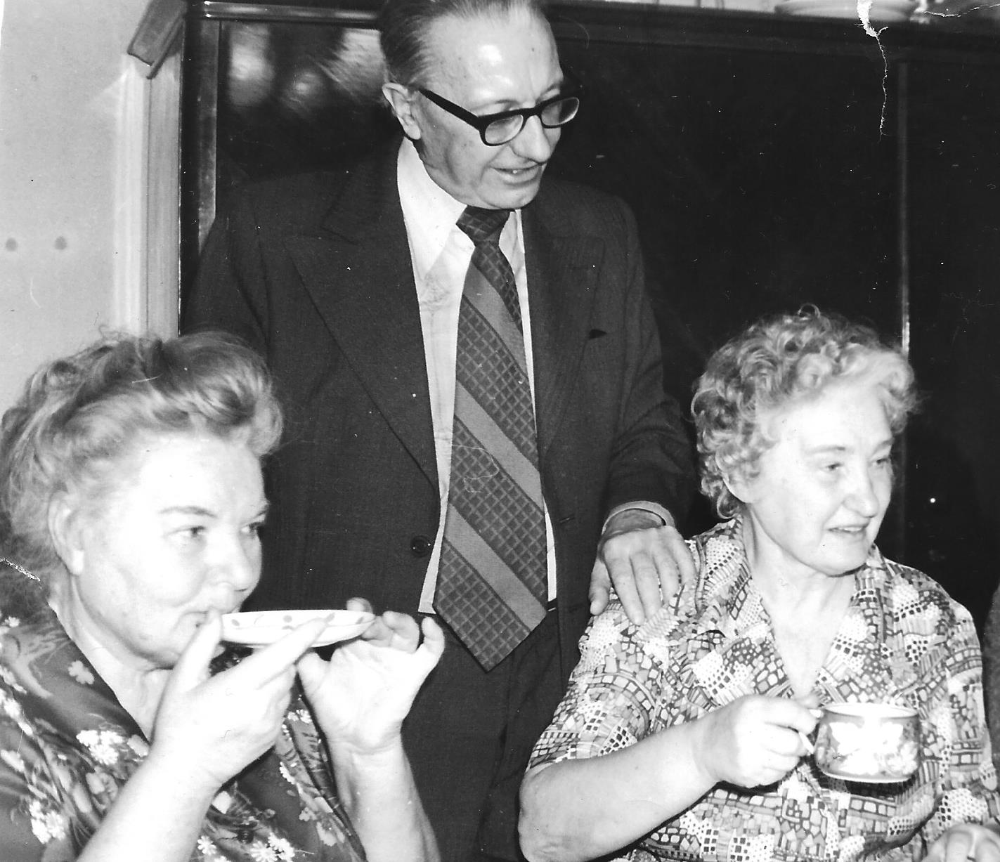
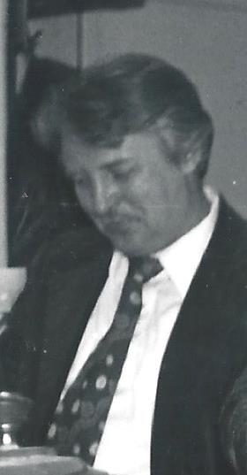
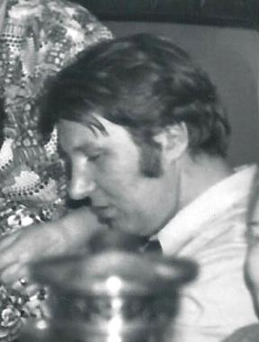
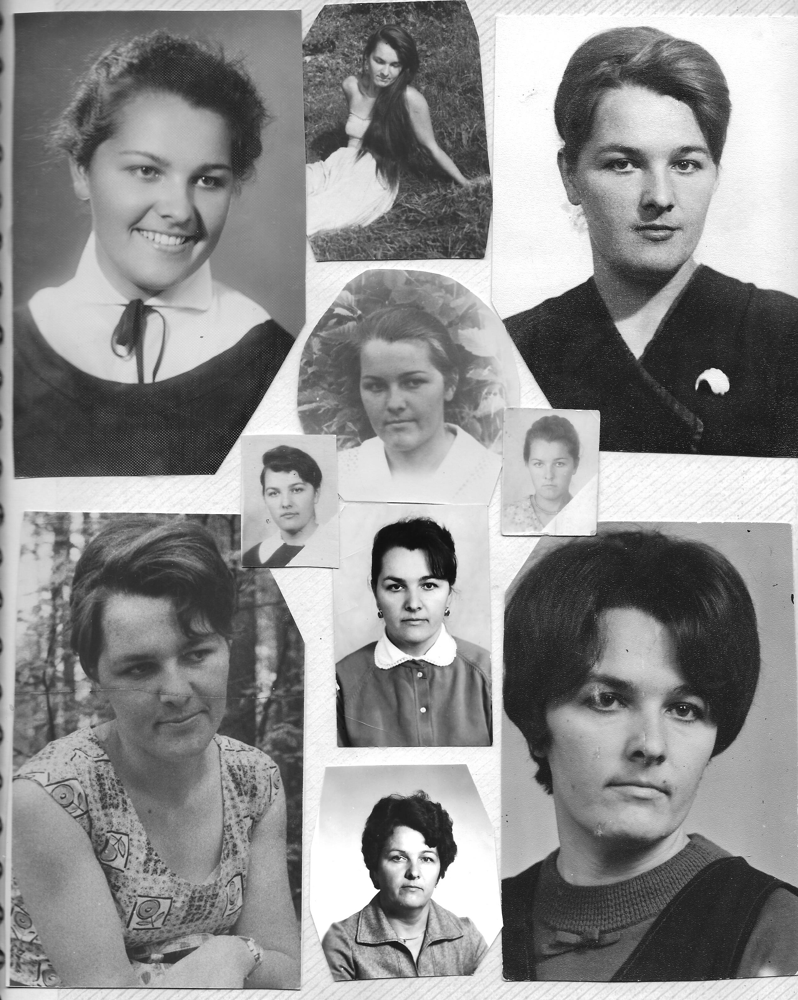

Повторно проверены все 30 встроенных изображений. Новых уникальных снимков: 0. Десять фотографий из заключительного коллажа выделены в отдельные локальные файлы и доступны в просмотрщике. Сам коллаж сохранён. Все подписи без подтверждённых имён: «Из семейного архива». Повторы на страницах не добавлены.
В разделе «Ещё семейные истории» теперь 13 разных фотографий вместо 4. Девять снимков перенесены с прежних страниц без повторения. Добавлен подлинный отрывок о тётушках. На последнем развороте «Листая годы» размещены слова о счастливых вечерах; пояснения разработчика удалены. Письмо Иры и условия его открытия сохранены.
Всего остаётся 30 уникальных изображений. Для истории о внуках подтверждённых снимков недостаточно. Проверены все 41 разворот, 11 кроссвордов, обе подсказки, проверка ответов, сохранение и увеличение фотографий.
Было 30 уникальных изображений; стало 30. Новых снимков в исходном документе не обнаружено. В число входит один оригинальный коллаж, который не разрезался ради увеличения количества.
Проверены все 30 JPEG непосредственно внутри исходного DOC и соответствующие файлы извлечённого архива: пиксельное содержимое совпадает. Разные снимки сверены визуально, повторного размещения и производных обрезок в игре нет. Кнопка увеличения открывает тот же снимок для подробного просмотра.
Фотографии теперь распределены по большему числу страниц. У шести кроссвордов появились архивные снимки: мама Нины, отец Бори, Маша, Юля и Витя; у рассказа о Николае — его портрет, на вступлении к юности — снимок из пионерлагеря. Тексты, подписи и вопросы сохранены. Заключительный коллаж доступен до прохождения по кнопке «Заключительный фотоальбом» в содержании и пятой главе.
Вернулось исходное разрешение файлов, особенно полезное для коллажа. Все снимки можно увеличить нажатием. Для дальнейшего расширения нужны фотографии детства Нины, обоих сыновей, работы, походов и дачи, обоих внуков, правнука Коли и золотой свадьбы. В документе нет уверенно подписанных снимков этих эпизодов.
Проверены увеличение/закрытие фотографии, доступ к альбому до прохождения, загрузка 30 файлов, все 11 кроссвордов, подсказки, сохранение и финальное письмо.
20 ноября 2026 · «Страницы моей жизни»
Сохранены обложка, бумажные развороты, анимация, все 60 исходных вопросов и их координаты. В пятой главе добавлен третий кроссворд «Семья растёт»: теперь всего 11 сеток и 66 уникальных вопросов. Старый прогресс сохраняется; финал учитывает и новую сетку.
В журнале 53 разных дословных отрывка из оригинала. 17 новых выдержек дополняют историю родственников, юность, работу, рождение Димы, обоих внуков, Диму и Наташу, пенсионные годы, золотую свадьбу и правнука Колю. Повторяющиеся фотографии перераспределены: все 30 оригинальных снимков показаны по одному разу, включая обложку и финал. Каждый снимок имеет подпись; авторский текст не отредактирован.
Дата рождения Сашка — 12 марта 1987 года — сохранена в дословных отрывках на отдельном развороте. Подтверждённого отдельного портрета Сашка в документе не найдено; неизвестные лица на коллаже ему не приписаны.
Кнопки «Назад», «Содержание» и «Далее» закреплены внизу экрана. Рядом указаны глава, номер кроссворда и страницы; список «К главе» открывает любую главу. Закладка запоминает страницу чтения, включая воспоминания. Пустое место обложки больше не вызывает случайный переход. Клавиши перелистывания не мешают выбору главы, кнопкам и вводу букв.
Подписи увеличены до 18 px, клетки — примерно до 40 px при обычном масштабе, основные кнопки — до 48 px по высоте. Сохраняется увеличение «А+». При большом масштабе широкую сетку можно прокручивать внутри страницы, не теряя доступ к клеткам. Фотографии и воспоминания доступны без решения кроссвордов.
| Тема | Страница мемуаров |
|---|---|
| В школьные годы | 4 |
| Семья Евсеевых | 14 |
| Подарок к восемнадцатилетию | 12 |
| Тётя Люся и Николай | 13 |
| Работа в павильоне «Космос» | 10 |
| Долгожданная встреча | 10 |
| Рождение второго счастья | 20 |
| Работа и командировки | 19 |
| Второй внук — Сашок | 24 |
| Семья в Тургай | 23 |
| Новые годы | 24 |
| Дима и Наташа | 24 |
| Правнук Коля | 25 |
| Пятьдесят лет вместе | 24 |
| Март 1987 года | 23 |
Для этих пяти файлов оставлена подпись «Из семейного архива». Если уточните людей, смогу заменить её точными именами. Ни даты снимков, ни порядок людей не выдуманы.





| Файл | Подпись |
|---|---|
| 01.jpg | Василий Макарович, дедушка Нины |
| 02.jpg | Ефимия Никифоровна, бабушка Нины |
| 03.jpg | Михаил Васильевич, папа Нины |
| 04.jpg | Валентина Павловна, мама Нины |
| 05.jpg | Толя, брат Нины |
| 06.jpg | Нина в юности |
| 07.jpg | Витя, брат Нины |
| 08.jpg | Нина — председатель дружины |
| 09.jpg | Михаил Иванович Артамонов, отец Бори |
| 10.jpg | Из семейного архива |
| 11.jpg | Люся, сестра мамы Нины |
| 12.jpg | Тоня, сестра мамы Нины |
| 13.jpg | Валя, мама Нины |
| 14.jpg | Николай Глинский, сын тёти Люси |
| 15.jpg | Из семейного архива |
| 16.jpg | Из семейного архива |
| 17.jpg | Из семейного архива |
| 18.jpg | Владимир, брат папы Нины |
| 19.jpg | Ксения, жена Владимира |
| 20.jpg | Галя, дочь Владимира и Ксении |
| 21.jpg | Василий, брат папы Нины |
| 22.jpg | Клавдия, жена Василия |
| 23.jpg | Виктор, брат папы Нины |
| 24.jpg | Валентина, жена Виктора |
| 25.jpg | Юра, сын Виктора и Валентины |
| 26.jpg | Гриша, младший брат папы Нины |
| 27.jpg | Маша, двоюродная сестра папы Нины |
| 28.jpg | Люба, крёстная Миши |
| 29.jpg | Юля, дочь Маши |
| 30.jpg | Из семейного архива |
Автоматически проверены 11 связных сеток: номера, длины, русские буквы, совпадения пересечений, отсутствие лишних рядов и 66 уникальных вопросов/ответов. Исходные 10 сеток побуквенно сравнивались с предыдущей версией. Все 53 цитаты сверены с извлечённым текстом и страницами исходного документа; одинаковых или вложенных повторных цитат нет.
Браузерный тест прошёл все 11 кроссвордов через элементы игры: ввод кириллицы, редактирование, обе подсказки, проверку пустых/верных/ошибочных слов, конфликт пересечений, повторную проверку, переходы, закладку после перезагрузки, отмену сброса и открытие финала. Проверены ширины 1280, 1440, 1920 и 390 px; все 30 изображений загружаются. Ошибок JavaScript в этом сценарии не обнаружено. Это статическое приложение: отдельная компиляция и сервер не требуются.
app.js — совместимая закладка и учёт нового кроссворда; book.js — навигация и дополнительные развороты; style.css — читаемость и постоянные кнопки; grids.js — только добавленная сетка; journal.js — её название и распределение по главам; archive.js — дословные цитаты, подписи и распределение фотографий; README.txt — актуальная инструкция. REPORT.html — этот отчёт.